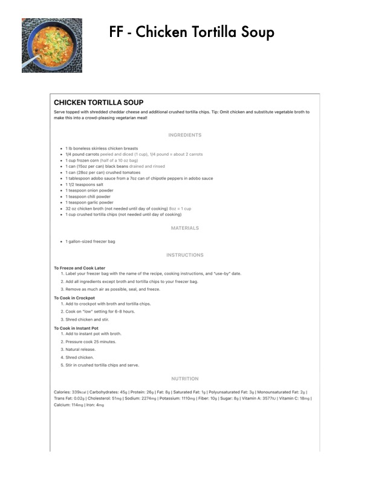

FF - Chicken Tortilla Soup

Original cookbook page 757
Ingredients
- * 1b boneless skinless chicken breasts
- * 1/4 pound carrots peeled and diced (1 cup), 1/4 pound = about 2 carrots
- '+ 1cup frozen corn (half of a 10 oz bag)
- 1.can (160z per can) black beans dr
- '+ 1can (2802 per can) crushed tomatoes
- * 1 tablespoon adobo sauce from a 7oz can of chipotle peppers in adobo sauce
- + 11/2 teaspoons salt
- '+ 1 teaspoon onion powder
- '+ 1 teaspoon chili powder
- + 1 teaspoon garlic powder
- * 32.07 chicken broth (not needed until day of cooking) 807 = 1 cup
- + 1cup crushed tortilla chips (not needed until day of cooking)
- ned and rinsed
- MATERIA
- * 1 gallon-sized freezer bag
- To Freeze and Cook Later
- To Cook in Crockpot
- 1, Add to crockpot with broth and tortilla chips.
- To Cook in Instant Pot
- NUTRITION
- Calories: 339kcal | Carbohydrates: 45g | Protein: 26s | Fat: 8g | Saturated Fat: 19 | Polyunsaturated Fat: 39 | Monot
- Trans Fat: 0.02g | Cholesterol: 51mg | Sodium: 2274mg | Potassium: 110mg | Fiber: 10g | Sugar: 8g | Vitamin A: 357
- Calcium: 114mg | Iron: 4mg
Instructions
- Serve topped with shredded cheddar cheese and additional crushed tortilla chips. Tip: Omit chicken and substitu make this into a crowd-pleasing vegetarian meal! Remove as much air as possible, seal, and freeze. Cook on "low" setting for 6-8 hours Shred chicken and stir. Add to instant pot with broth. Pressure cook 25 minutes, Natural release. Shred chicken. Stir in crushed tortilla chips and serve.
Recipe #757 from collection